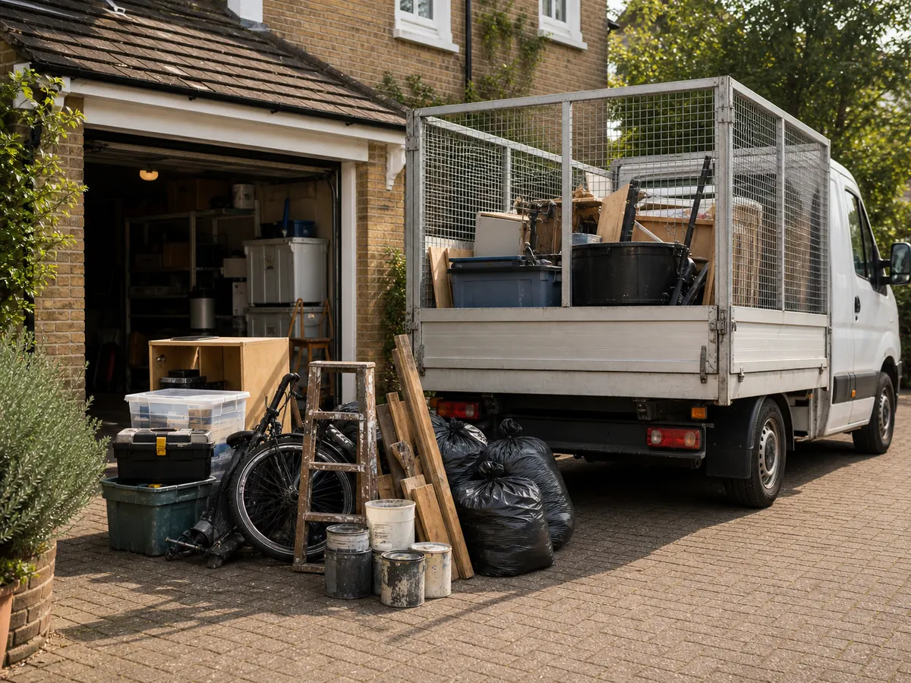
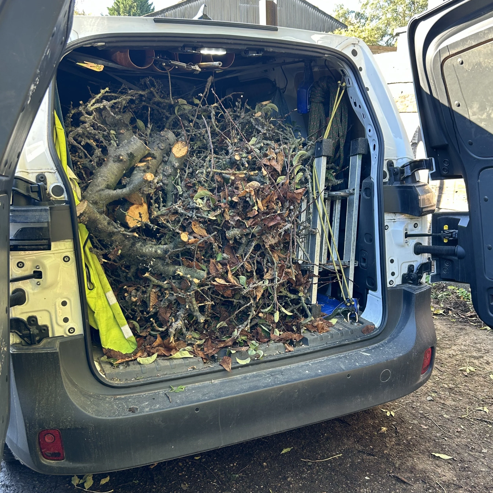
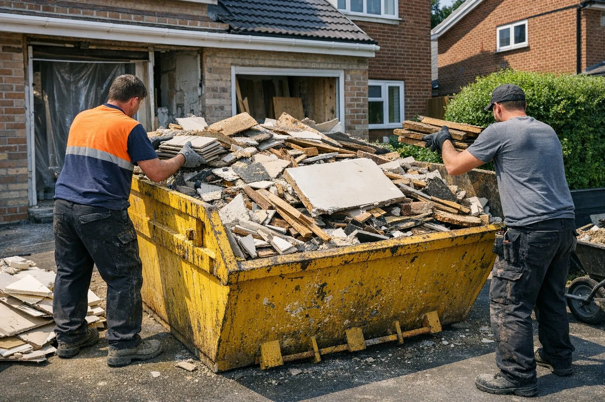

House Clearances
Furniture, unwanted household items and general waste cleared from houses, flats, garages and properties.
Fast, straightforward waste removal and property clearances for homes, landlords and businesses across Blyth and surrounding areas.
From a garden tidy-up to a complete house clearance, All Waste takes care of the lifting, loading and removal.

Furniture, unwanted household items and general waste cleared from houses, flats, garages and properties.

Branches, cuttings, old garden items and general outdoor waste collected and removed.

Renovation debris, rip-out waste and general builders waste removed without the hassle of a skip.
Ideal for homeowners, landlords, trades and businesses needing unwanted items moved quickly.
Send All Waste a WhatsApp message with a description and photos of what needs clearing for a quick quote.